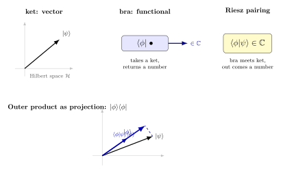

内积、对偶、Bra-Ket — Dirac 的"括号"对应数学的什么?
上一节我们抽象地讲了向量空间, 把"位置"、"动量"、"波函数"统一成线性结构里的元素. 本节要回答的问题更具体: 为什么物理学家写量子态时, 要用 $\ket{\psi}$ 这种"右括号"和 $\bra{\phi}$ 这种"左括号", 然后再把它们拼成 $\braket{\phi}{\psi}$? 这个看似排版怪异的记号, 是 Dirac 在 1939 年的短论 A new notation for quantum mechanics 里正式引入的. 他写道: "我把一个完整的对称符号 $\langle\,|\,\rangle$ 拆成两半, 各取一半留作半符号." 半个括号听起来像把一只袜子拆成两片穿, 但这背后藏着一个非常干净的数学事实 — Frigyes Riesz 在 1907 年关于 $L^2$ 函数空间的表示定理.
本节我们把这两件事接起来: 内积空间和对偶空间是怎么通过 Riesz 互相决定的, 以及 Dirac 记号为什么是这一对应在符号层面的最经济写法.
一、内积: 把"夹角"和"长度"装进抽象空间
在欧几里得平面 $\mathbb R^2$ 上, 我们小学就知道两个向量 $\vec u=(u_1,u_2)$ 与 $\vec v=(v_1,v_2)$ 的"点积" $\vec u\cdot\vec v=u_1v_1+u_2v_2$. 它一次性给了我们"长度"($\|\vec u\|^2=\vec u\cdot\vec u$)和"夹角"($\cos\theta=\vec u\cdot\vec v/(\|\vec u\|\|\vec v\|)$). 我们想在抽象的复向量空间里把这套结构原封不动搬过去.
设 $V$ 是复数域 $\mathbb C$ 上的向量空间. 一个 内积 (inner product) 是一个映射 $\langle\cdot,\cdot\rangle: V\times V\to\mathbb C$, 满足三条:
$$ \begin{aligned} &\text{(共轭对称)}\quad &&\langle u, v\rangle=\overline{\langle v, u\rangle},\\ &\text{(第二变元线性)}\quad &&\langle u, \alpha v_1+\beta v_2\rangle=\alpha\langle u, v_1\rangle+\beta\langle u, v_2\rangle,\\ &\text{(正定)}\quad &&\langle v, v\rangle\ge 0,\;\;\text{等号当且仅当}\;v=0. \end{aligned} \tag{1} $$
第一条共轭对称看起来突兀, 它的来源是这样的: 我们想让 $\langle v, v\rangle$ 是非负实数 (好作为 $\|v\|^2$), 同时又希望第二变元上是线性的 — 两条诉求一旦同时提出, 第一变元就只能是共轭线性 ($\langle\alpha u, v\rangle=\bar\alpha\langle u, v\rangle$). 这是物理学界的"右线性约定", 与某些纯数学教材的"左线性约定"相反, 但 Dirac 记号天然兼容前者.
三个最常用的例子:
- $\mathbb C^n$ 的标准内积: $\langle u,v\rangle=\sum_{i=1}^n\bar u_i\,v_i$. 在 $\mathbb R^n$ 上退化成普通点积.
- $L^2(\mathbb R)$ 平方可积函数空间: $\langle f,g\rangle=\int_{-\infty}^{\infty}\overline{f(x)}\,g(x)\,\mathrm dx$. 这是量子力学波函数所在的空间.
- 矩阵的 Hilbert-Schmidt 内积: $\langle A,B\rangle=\Tr(A^\dagger B)$. 这条在密度矩阵和算符代数里反复出现.
从 (1) 可以推出一条几乎"白送"的不等式 — Cauchy-Schwarz:
$$ |\langle u, v\rangle|^2\le\langle u, u\rangle\,\langle v, v\rangle. \tag{2} $$
证明只需要观察 $\langle u-\lambda v, u-\lambda v\rangle\ge 0$ 对任意 $\lambda\in\mathbb C$ 成立, 然后取 $\lambda=\langle v, u\rangle/\langle v, v\rangle$ (假设 $v\neq 0$) 展开即可. Cauchy-Schwarz 给我们定义"夹角"的资格: $\cos\theta=\Re\langle u, v\rangle/(\|u\|\|v\|)$ 总是落在 $[-1,1]$ 里. 这条不等式同时也是量子力学测不准原理 (Robertson 不等式) 的直接源头 — 我们会在本卷的算符部分用到它.
有了内积就有了范数 $\|v\|=\sqrt{\langle v,v\rangle}$, 进而有了距离, 进而有了"序列收敛". 一个完备的复内积空间 (即 Cauchy 列必收敛) 就叫 Hilbert 空间. $\mathbb C^n$ 自动完备; $L^2(\mathbb R)$ 完备需要 Lebesgue 积分作底盘 — 这正是 Riesz 1907 工作的舞台.
二、对偶空间 $V^*$: 看向量的另一种方式
定义很短: 给定向量空间 $V$, 它的 对偶空间 $V^*$ 是所有 $V\to\mathbb C$ 的线性映射 (称为线性泛函) 组成的集合 — 在无穷维情形再加上"连续"的要求. $V^*$ 自身按逐点加法和数乘也成为一个向量空间.
什么叫"看向量的另一种方式"? 一个向量 $v\in V$ 是被"指向"的; 一个泛函 $f\in V^*$ 是"评价器", 它把每个向量 $v$ 映射到一个数 $f(v)$. 物理上的类比: $v$ 是粒子 (有自己的位置), $f$ 是探测器 (你把粒子塞进去, 它给你读数). 这两类"东西"完全不同 — 一个是被作用的, 一个是去作用的.
有限维下两件事:
- 若 $V=\mathbb C^n$ 写成列向量, 则 $V^*$ 自然等同于行向量空间 — 一个行向量 $f=(\bar u_1,\ldots,\bar u_n)$ 作用到列向量 $v$ 上得到的就是矩阵乘法 $fv=\sum\bar u_iv_i$.
- $\dim V^*=\dim V$. 选定 $V$ 的一组基 $\{e_i\}$, 对偶基 $\{e^i\}$ 由 $e^i(e_j)=\delta^i_j$ 唯一确定.
关键观察: 上一段里我们随手用 "$\bar u_i$" 写了一个泛函. 这并非偶然 — 给定 $V$ 上的内积, 任何向量 $u\in V$ 都诱导一个泛函 $f_u(v):=\langle u, v\rangle$. 这是 $V$ 到 $V^*$ 的一个映射. 它是反线性的 ($u\mapsto\bar\alpha f_u$ 当 $u\to\alpha u$). 自然的下一个问题: 这个映射满射吗? 即每个泛函都长这样吗?
有限维答案显然是肯定的. 难点在无穷维 — $L^2$ 上有无数稀奇古怪的连续线性泛函, 凭什么它们都能写成"和某个固定函数做内积"的形式? 这就是 Riesz 1907 要回答的问题.
三、Riesz 表示定理: bra 与 ket 的桥
正式陈述 (Hilbert 空间版本):
Riesz 表示定理. 设 $\mathcal H$ 是 Hilbert 空间, $f:\mathcal H\to\mathbb C$ 是连续线性泛函. 则存在唯一的 $u_f\in\mathcal H$, 使得对所有 $v\in\mathcal H$ 有 $f(v)=\langle u_f, v\rangle$. 而且 $\|f\|=\|u_f\|$.
证明思路 (略写以保持篇幅): 若 $f\equiv 0$ 则取 $u_f=0$. 否则核 $\ker f=\{v:f(v)=0\}$ 是闭真子空间 — 用 Hilbert 空间的"正交分解定理" $\mathcal H=\ker f\oplus(\ker f)^\perp$, 后者是一维的. 在其中取一个单位向量 $w$, 则 $u_f=\overline{f(w)}\,w$ 即所求. 唯一性来自正定性: 若 $\langle u_1,v\rangle=\langle u_2,v\rangle$ 对所有 $v$, 取 $v=u_1-u_2$ 得 $\|u_1-u_2\|^2=0$.
有了这个定理, 我们就有了一组干净的对应:
- 每个向量 $\ket\phi\in\mathcal H$ —— 称为 ket;
- 每个连续线性泛函 $f\in\mathcal H^*$ —— 称为 bra, 记作 $\bra\phi$, 其中 $\phi$ 是 Riesz 给出的那个唯一向量;
- "评价" 这一基本动作 $f(v)=\bra{\phi}\big(\ket\psi\big)$ 在 Dirac 记号里直接合写为 $\braket{\phi}{\psi}$ — 一对中括号: 左半 $\bra\phi$, 右半 $\ket\psi$, 中间放在一起就是数.
这就是为什么"括号"会被拆成两半. 它不是排版花招, 而是 Riesz 对应的图形化体现 — 一边是 $\mathcal H$ 里的向量, 一边是 $\mathcal H^*$ 里的泛函, 一旦它们碰头, 立刻塌缩成一个数.
Dirac 记号的真正威力是 它鼓励你把"括号外面"也用作运算. 比如 $\ket\phi\bra\phi$ — 把 ket 写左, bra 写右 — 这是一个算符, 因为它先吃一个 ket $\ket\psi$ 给出 $\braket{\phi}{\psi}$, 再把这个数乘回 $\ket\phi$:
$$ \big(\ket\phi\bra\phi\big)\ket\psi=\ket\phi\,\braket{\phi}{\psi}. \tag{3} $$
当 $\ket\phi$ 是单位向量, $\ket\phi\bra\phi$ 就是到一维子空间 $\mathbb C\ket\phi$ 上的正交投影算符. 这小小一行三个符号同时调动了"向量"、"对偶向量"、"算符"三件事, 而且语法严整 — 可以连接, 可以求和, 可以放进迹里. 这种"线性代数标记法"就是 Dirac 给我们的礼物.

四、具体计算: 谐振子能态的正交完备
为了让上面这套抽象记号"动起来", 我们落到一维谐振子. 哈密顿量 $H=\frac{p^2}{2m}+\frac{1}{2}m\omega^2 x^2$ 的能量本征态在位置表象下是
$$ \psi_n(x)=\frac{1}{\sqrt{2^n n!}}\Big(\frac{m\omega}{\pi\hbar}\Big)^{1/4}H_n(\xi)\,e^{-\xi^2/2},\quad\xi=\sqrt{m\omega/\hbar}\,x, $$
其中 $H_n$ 是 Hermite 多项式. 我们记 $\ket n$ 为对应的态向量, 验证 $\braket{n}{m}=\delta_{nm}$.
按 $L^2$ 内积:
$$ \braket{n}{m}=\int_{-\infty}^{\infty}\overline{\psi_n(x)}\,\psi_m(x)\,\mathrm dx=\frac{1}{\sqrt{2^{n+m}n!\,m!}}\sqrt{\frac{m\omega}{\pi\hbar}}\int_{-\infty}^{\infty}H_n(\xi)H_m(\xi)e^{-\xi^2}\,\mathrm d\xi\cdot\frac{1}{\sqrt{m\omega/\hbar}}. $$
把变量换成 $\xi$, 标准化常数和 $\mathrm dx=\sqrt{\hbar/m\omega}\,\mathrm d\xi$ 一对消, 剩下
$$ \braket{n}{m}=\frac{1}{\sqrt{\pi}\,\sqrt{2^{n+m}n!\,m!}}\int_{-\infty}^{\infty}H_n(\xi)H_m(\xi)\,e^{-\xi^2}\,\mathrm d\xi. $$
Hermite 多项式有如下经典正交关系:
$$ \int_{-\infty}^{\infty}H_n(\xi)H_m(\xi)\,e^{-\xi^2}\,\mathrm d\xi=\sqrt{\pi}\,2^n n!\,\delta_{nm}. $$
代入即得 $\braket{n}{m}=\delta_{nm}$. 验证完毕.
更进一步, $\{\ket n\}_{n=0}^{\infty}$ 不仅正交, 还完备: 任何 $\ket\psi\in L^2$ 都能展开
$$ \ket\psi=\sum_{n=0}^{\infty}c_n\ket n,\quad c_n=\braket{n}{\psi}. $$
把展开式塞回去看一眼:
$$ \ket\psi=\sum_n\ket n\braket{n}{\psi}=\Big(\sum_n\ket n\bra n\Big)\ket\psi. $$
由 $\ket\psi$ 任意性得到
$$ \sum_{n=0}^{\infty}\ket n\bra n=I. \tag{4} $$
这就是完备性关系, 经常被物理学家叫做"插入完备基". 写法 $\sum_n\ket n\bra n=I$ 利用了 (3) 那一招, 把"求和投影 = 恒等"压缩成一行 — 它在量子力学的几乎每个推导里都会被插一脚.
顺手算一个更具体的: 设 $\ket\psi=\frac{1}{\sqrt 2}\big(\ket 0+\ket 1\big)$, 测量能量得到基态 $\ket 0$ 的概率为
$$ P_0=|\braket{0}{\psi}|^2=\Big|\frac{1}{\sqrt 2}\Big|^2=\frac{1}{2}. $$
这就是 Born 概率规则的 Dirac 写法: 测量得到本征态 $\ket n$ 的概率等于 $\ket\psi$ 的 bra-ket 模方. 公式短到不能再短, 但每一个符号都对应到一段精确的数学.
五、物理回响、历史与展望
物理回响. 卷三第 4 节《二次量子化》整章建立在 bra-ket 之上 — 创生算符 $a^\dagger$ 把 $\ket n$ 抬到 $\ket{n+1}$, 玻色子的 Fock 空间 $\mathcal F=\bigoplus_{n}\mathcal H^{\otimes_s n}$ 写法离了 $\ket{n_1,n_2,\ldots}$ 这种态记号几乎没法表达; 卷三第 19 节《波粒二象》里, 双缝振幅写成 $\bra{x}\hat U\ket{\psi_0}$, 路径积分就是把它的"全部中间态完备性"往里反复插; 卷二第 16 节《玻色费米》里, 我们用 $|\Psi\rangle$ 是否对换出 $\pm 1$ 区分两种统计 — 这个翻号判断在 bra-ket 记号下一目了然. 本卷下面第 22 节《自伴算符》还会继续重用 bra-ket — 那时我们要解释 $A^\dagger$ 的 $\dagger$ 不是矩阵转置共轭那么简单, 而是通过 Riesz 表示定理把 bra 端的算符"转嫁"回 ket 端的形式. 没有今天这一节铺好的对偶配对结构, $\dagger$ 就是天上掉下来的符号.
历史. Frigyes Riesz 是匈牙利数学家, 1907 年他在 Comptes Rendus 上发表了关于 $L^2[a,b]$ 上线性泛函的表示定理 — 这是后来一般 Hilbert 空间表示定理的原型, 早于 Hilbert 关于"Hilbert 空间"的系统讲义 (1912). 同期 Maurice Fréchet 也独立得到了类似结论, 因此该定理偶尔也被称为 Riesz-Fréchet 定理. Riesz 自己一直觉得他要研究的是"把积分方程的求解写成代数操作"的问题, 当时还没有"对偶空间"这个名字; 那个抽象框架要等到 Banach 1932 年的《Théorie des opérations linéaires》才完整成形. 然后是 Paul Adrien Maurice Dirac. 在 1939 年的论文 A new notation for quantum mechanics (Math. Proc. Cambridge Philos. Soc., vol. 35) 里, Dirac 写明: 他注意到 $\langle\phi|\psi\rangle$ 这个符号只把"括号开"一半和"括号闭"一半组合时才有意义; 既然如此, 就把两半各自当独立物件 (bra 与 ket), 这样 $|\phi\rangle\langle\phi|$ 这种"内外翻转"的写法就有了天然解释 — 先 bra 后 ket 是数, 先 ket 后 bra 是算符. Dirac 没有明确引用 Riesz, 但他在该文中坦承"使得这种符号合法的, 是任意一个 ket 都可以由内积诱导一个 bra" — 这正是 Riesz 表示定理. 一个匈牙利数学家在 1907 年为研究三角级数而证的纯分析定理, 32 年后在剑桥的物理论文里以"括号"的形式获得了普及, 而它至今仍是物理研究生第一节量子力学课的基本语法.
极限与超越. Riesz 定理要求"连续"线性泛函 — 在无穷维, 不连续的线性泛函是有的 (它们需要选择公理才能构造), 它们就跑出 Hilbert 空间的视野. 还有一些"广义函数"如 $\delta(x)$ 严格不在 $L^2$ 里 — 但物理学家照样写 $\bra x\ket\psi=\psi(x)$ 把它当 bra 用. 这要靠 Gelfand-Naimark-Segal 的"装备 Hilbert 空间" (rigged Hilbert space, 又名 Gelfand triple $\Phi\subset\mathcal H\subset\Phi^*$) 才能严格化, 这是本卷第 14 节要碰的事情.
小结
本节我们从三件物理学家天天写的事情出发 — $\braket{\phi}{\psi}$, $\ket\phi\bra\phi$, $\sum_n\ket n\bra n=I$ — 把它们追溯到一条数学定理: Hilbert 空间和它的连续对偶通过内积自然同构 (Riesz, 1907). Dirac 在 1939 年把这条同构搬到了符号层面, 创造了 bra-ket 记号. 卷一到卷三里凡谈测量、振幅、跃迁、二次量子化、对易关系的地方, 都是这条同构在前台演出. 下一节我们要在这套记号里讨论本征值与本征向量: 算符的对角化, 谱分解, 自伴算符的实谱定理 — 它们让"测量得到一个具体数值"这一件物理事实有了完整的数学骨架.
▲